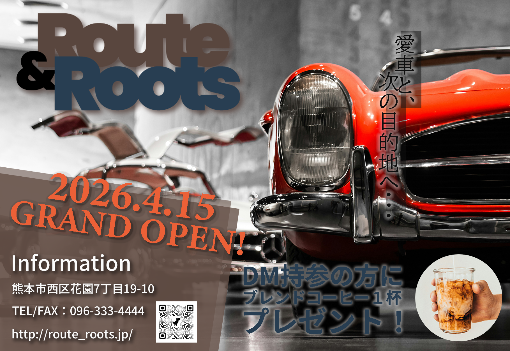
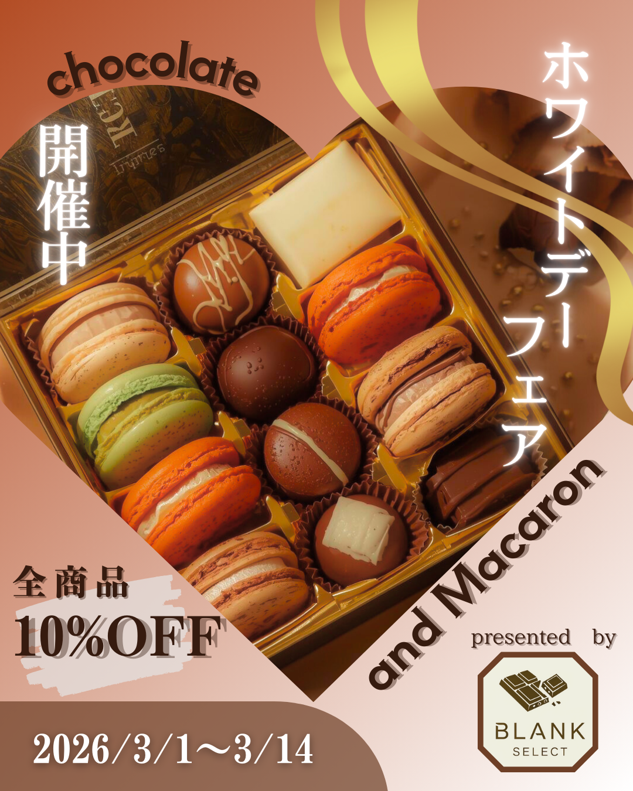
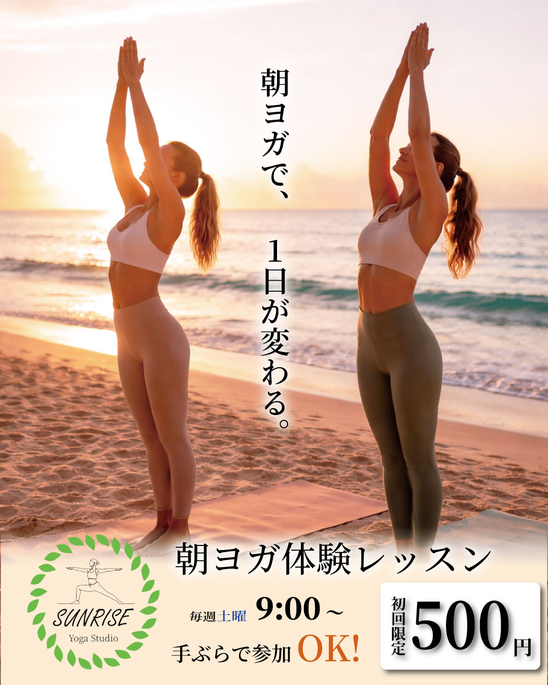

自己紹介
職業訓練校にて約6ヶ月間、Webデザイン・コーディングの基礎から実践までを学習しました。 未経験からのスタートでしたが、HTML/CSS/JavaScriptを使ったサイト制作だけでなく、 PHPやWordPressを用いた動的なサイト構築にも取り組み、基礎力を身につけました。 前職では事務職として、書類作成・データ入力・電話対応など正確さと丁寧さを求められる 業務を担当しており、その経験を活かして「相手に伝わる・使いやすい」制作を心がけています。
スキルセット
制作実績



経歴
2018年3月
サークル活動にて、IllustratorとPhotoshopに触れDTPデザインをはじめて作成する。
2018年4月 - 2023年1月
販売スタッフとして、来客対応にあたる。スマホ教室講師としても、スマホの基礎から応用、 また、タブレットを利用したプログラミングの授業なども行う。
2026年1月 - 2026年6月
HTML/CSS/JavaScriptを中心とした基礎学習に加え、Photoshop・Illustrator・PHP・WordPressなど Web制作に必要な知識・技術を体系的に学習。複数のWebサイト制作課題に取り組む。
2024年7月 - 現在
ポートフォリオサイトの制作や、個人開発を通じてスキルアップを継続中。 Web制作・事務系職種への応募を行っている。
お問い合わせ
ご質問やご連絡は、下記の方法よりお気軽にお問い合わせください。